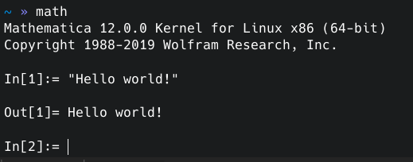

学校的高性能计算中心的服务器上安装了 Mathematica 软件，但要想连接到学校的服务器，必须使用学校 VPN。学校 VPN 使用的是 Pulse Secure VPN，因此我尝试在 Arch Linux 上连接 Pulse Secure VPN。
ArchWiki 的 Pulse Connect Secure 页面上介绍了两种在 Arch Linux 上连接 Pulse Secure VPN 的方法，分别是从 AUR 安装 pulse-secure 包和使用 OpenConnect VPN。但经过尝试，这两种方法都不能正常连接学校 VPN，说明 Pulse Secure VPN 对 Arch Linux 的支持不够好，必须另想其他方法。
在安卓手机上可以正常连接学校 VPN，所以可以想办法让电脑使用手机的 VPN 网络。换言之，如果在手机上运行 ssh 服务器，那么就可以将手机作为中转服务器，然后连接到学校服务器。
要在手机上运行 ssh 服务器，可以使用 Termux。
安装 Termux 时，不能直接从 Google Play 安装，因为 Google Play 中的 Termux 是旧版。正确的方法是按照 Termux 官网的介绍，从 F-Droid 的 Termux 页面下载最新版的安装包。
安装后执行如下命令安装 openssh：
$ pkg update
$ pkg install openssh一般而言，手机和电脑连接同一个路由器，或者电脑使用手机的热点上网。不论是上述哪一种情况，手机和电脑都在同一个局域网内。经查看得知手机的局域网 IP 地址为 172.21.1.100。
要将 ssh 公钥传到手机，可以使用 nc 命令。
在 Termux 中安装 netcat：
$ pkg install netcat-openbsd在 Termux 中运行：
$ nc -l 3444 >> ~/.ssh/authorized_keys < /dev/null在电脑上运行：
$ cat ~/.ssh/id_rsa.pub | nc 172.21.1.100 3444在 Termux 中运行 ssh 服务器：
$ sshd在电脑上编辑 ~/.ssh/config 文件，加入如下内容：
Host phone
HostName 172.21.1.100
User u0_a41
Port 8022其中，u0_a41 是 Termux 的用户名，可以在 Termux 中使用 whoami 命令查看。
然后在电脑上运行：
$ ssh phone即可连接到手机。
在手机上登录 Pulse Secure VPN，在电脑上编辑 ~/.ssh/config 文件，加入如下内容：
Host hpc
Hostname ...
User ...
ProxyJump phone其中，Hostname 是学校服务器的域名或 IP 地址，User 是登录学校服务器时使用的用户名，ProxyJump phone 表示将手机作为中转服务器。
在电脑上运行：
$ ssh hpc即可连接到学校服务器。
正当我以为大功告成之际，却发现在 ssh 中输入几个字符后，ssh 程序就会失去响应。经过查找资料，看到了 Stack Overflow 上的一个回答，推测可能是 MTU 的问题。
根据回答中的方法，使用 netstat -i 命令查看到 VPN 的 MTU 值为 1400：
$ netstat -i
Kernel Interface table
Iface MTU RX-OK RX-ERR RX-DRP RX-OVR TX-OK TX-ERR TX-DRP TX-OVR Flg
...
tun0 1400 6 0 0 0 16 0 0 0 PRU要将 MTU 修改为 1000，是使用：
$ sudo ifconfig tun0 mtu 1000但是，我的手机没有 root，所以不能使用 sudo 命令，也就没有办法修改 MTU。
这时想到，可以在 VirtualBox 中安装 Bliss OS 虚拟机作为中转服务器。Bliss OS 是安卓系统，而且可以使用 root 权限。另外，使用虚拟机还有一个额外的好处，就是不需要经过手机中转，所以速度更快，而且连接更稳定。
我安装的是 Bliss OS 15.0 Alpha 版本。安装 Bliss OS 虚拟机的方法与其他虚拟机大致相同，需要注意的是 Graphics Controller 一项必须选择 VBOXVGA，否则无法正常启动。
另外，在 Network 中需要同时添加 NAT 和 Host-only Adapter 两个适配器，其中前者用于虚拟机连接互联网，后者用于虚拟机与主机连接。
Pulse Secure 可以从 Aurora Store 中下载，配置方法与安卓手机相同。
修改 MTU 后，即可正常连接：

（初稿作于 2021 年 12 月 17 日，定稿于 2022 年 1 月 14 日）